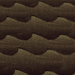

| Ocean | |
|  |
Currently, the ocean acts as a barrier, and during Winter, a place for Pengulls to spawn before they hop onto shore. No living thing can cross the ocean, even flying mobs like Batilisks.
Objects that are situated on the coast very close to the ocean may drop their items in the ocean, and aside from bugged objects, they will fall into the water with a splash and be unretrievable.
| Biomes | |
| Surface | Chess • Grasslands • Graveyard • Forest • Marsh • Mosaic • Ocean • Rockyland • Savanna • Desert • Deciduous Forest |
| Caves | Mushtree Forest • Rocky Plains • Stalagmite Biomes • Sunken Forest • Cave Swamps |
| Ruins | Abyss • Labyrinth • Military • Sacred • Village • Wilds |
| Related | Bridges • Map • Road (Trail) • Turfs |